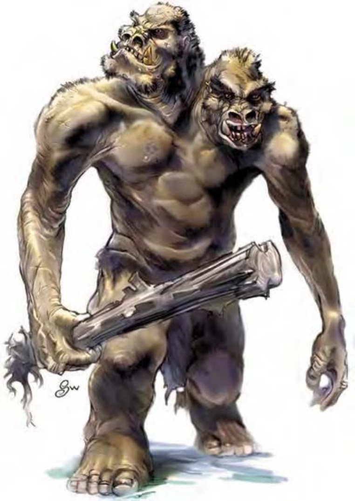

| 资料栏位 | 双头巨人 (Ettin) 大型巨人 |
| 生命骰 | 10d8+20 (65HP) |
| 先攻 | +3 |
| 速度 | 穿着生皮甲时30英尺 (6格)；基本速度40英尺 |
| 防御等级 | 18 (-1体型、-1敏捷、+7天生、+3生皮甲)、接触8、措手不及18 |
| 基本攻击/擒抱 | +7 / +17 |
| 攻击 | 钉头锤+12近战 (2d6+6)；或标枪+5远程 (1d8+6) |
| 全力攻击 | 2钉头锤+12 / +7近战 (2d6+6)；或2标枪+5远程 (1d8+6) |
| 占据/触及 | 10英尺 / 10英尺 |
| 特殊攻击 | ― |
| 特殊能力 | 昏暗视觉、高段多武器攻击 |
| 豁免 | 强韧+9、反射+2、意志+5 |
| 属性 | 力量23、敏捷8、体质15、智力6、感知10、魅力11 |
| 技能 | 聆听+10、搜索+1、侦察+10 |
| 专长 | 警觉、精通先攻、钢铁意志、猛力攻击 |
| 环境 | 寒冷带丘陵 |
| 组织 | 单独、成队 (2-4)、行列 (1-2，加上1-2只棕熊)、一团 (3-5，加上1-2只棕熊) 或部落 (3-5，加上1-2只棕熊及7-12个兽人或9-16个地精) |
| 挑战级数 | 6 |
| 宝藏 | 标准 |
| 阵营 | 通常混乱邪恶 |
| 进化 | 视人物职业而定 |
| 等级修正值 | +5 |
双头巨人的体型硕大，有两个头，形状像猪，下颚前突而且宽阔，满嘴烂牙，下排的犬齿大而弯曲，跟山猪的獠牙一样。身上的毛发肮脏纠结，几乎没有一处干净。
双头巨人生性邪恶而且捉摸不定，喜欢在晚上出来猎食。因为有两个头，所以视力和警觉性都异常地高，适合担任守卫或斥候。
双头巨人非到不得已绝不洗澡，皮肤上积满肮脏的污垢，就像一层灰色厚重的毛皮。身上没有恶臭的双头巨人实在是百年难得一见。成年双头巨人可以高达13英尺，重5200磅，寿命约75年。
双头巨人没有自己的语言，使用夹七夹八的兽人语、地精语和巨人语。若生物通晓上述语言之一，只要通过智力检定 (DC=15) 就能和双头巨人沟通，每询问一项信息就必须进行一次检定。若生物能说上述语言中任两种，难度等级降为10。如果三种都会，难度等级为5。虽然智力不高，双头巨人之间可以沟通无碍。独处时，两个头甚至会互相聊天打发时间。
战斗虽然不甚聪明，双头巨人还是相当诡诈的对手，他们偏好突袭而非正面攻击敌人。然而一旦开打，双头巨人通常会勇猛战斗，直到敌人死伤殆尽为止。
高段多武器攻击 (特异)：因为双头巨人的两个头分别控制一只手臂，所以，双手分持钉头锤或标枪战斗时，在攻击检定或伤害掷骰上不会受到任何减值。
技能：因为有两个头，双头巨人在进行“聆听”、“侦察”和“搜索”检定时具有+2种族加值。
双头巨人喜欢在偏僻的岩石地带建筑巢穴，栖息在黑暗的地底，洞穴中充斥着食物残渣的腐败臭味。只要对本身有益，他们可以容忍和某些生物共同生活，例如兽人。但对于其他生物，双头巨人非常暴力而且自闭，会不由分说地攻击入侵者。双头巨人多半独居，和配偶也只会同居几个月，生下小孩之后就分开。双头巨人幼儿成长的速度相当快，出生之后通常只需要八到十个月就可以独立求生。
在某些情形下，一群双头巨人会追随一个强大的领导者。只要领导者不被击败，这种群体就可以持续下去。一旦遭受重大挫败，其他个体就会四散离去。
双头巨人本身对财宝没什么兴趣，但很清楚财宝对其他生物的诱惑力。所以会收集宝藏来雇用地精或兽人。这些受雇的生物通常会在双头巨人巢穴四周布下陷阱，对付难缠的敌人。